场景素材库 · 188 张
打开地图编辑器 · 登记表 · 素材规范
这一页由 node tools/build-scene-library.js 生成。可放置家具 26 种、贴花 2 种；其余是组件，由对应对象组合使用。
可放置家具 26
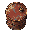
杂物桶
barrel · 32×32 · 占地 1×1prop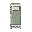
诊疗床
bed_clinic · 32×32 · 占地 1×2prop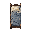
家用床
bed_home · 32×32 · 占地 1×2prop长凳
bench_wood · 32×32 · 占地 2×1prop木椅
chair · 32×32 · 占地 1×1prop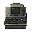
安保监控台
console_security · 32×32 · 占地 1×1prop银行柜台
counter_bank · 32×32 · 占地 2×1prop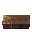
营业柜台
counter_shop · 32×32 · 占地 2×1prop桌子
desk · 32×32 · 占地 2×1prop橱窗展柜
display_clock · 32×32 · 占地 2×1prop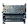
货架
shelf · 32×32 · 占地 2×1prop沙发
sofa_home · 32×32 · 占地 2×1prop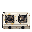
灶台
stove_home · 32×32 · 占地 1×1prop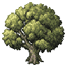
院落树木
tree_courtyard_canopy · 96×96 · 占地 3×3prop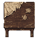
老式餐桌
table_dining · 64×64 · 占地 2×2prop普通木椅
chair_wood · 32×32 · 占地 1×1prop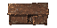
旧衣柜
wardrobe_home · 64×32 · 占地 2×1prop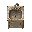
厨房水槽
sink_kitchen · 32×32 · 占地 1×1prop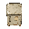
老式冰箱
fridge_home · 32×32 · 占地 1×1prop医疗器械推车
cart_medical · 32×32 · 占地 1×1prop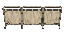
医用屏风
screen_clinic · 64×32 · 占地 2×1prop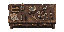
钟表维修台
workbench_clock · 64×32 · 占地 2×1prop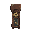
落地钟
clock_grandfather · 32×32 · 占地 1×1prop银行排队围栏
barrier_queue · 32×32 · 占地 1×1prop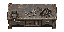
重型工作台
workbench_industrial · 64×32 · 占地 2×1prop木质托盘堆
pallet_stack · 64×32 · 占地 2×1prop地面贴花 2
细裂纹
decal_surface_crack_01 · 32×32 · 占地 1×1decal潮湿痕迹
decal_surface_damp_01 · 32×32 · 占地 1×1decal基础地面 4
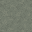
平整水泥 A
ground_concrete_plain_01 · 32×32ground · 地面字符 1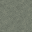
平整水泥 B
ground_concrete_plain_02 · 32×32ground · 地面字符 2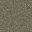
压实泥土 A
ground_soil_compact_01 · 32×32ground · 地面字符 3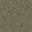
压实泥土 B
ground_soil_compact_02 · 32×32ground · 地面字符 4地块组件 14
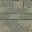
bridge_stone_deck
bridge_stone_deck · 32×32terrain-component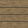
bridge_wood_deck
bridge_wood_deck · 32×32terrain-component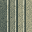
canal_steps_e
canal_steps_e · 32×32terrain-component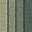
canal_steps_w
canal_steps_w · 32×32terrain-componentcanal_water
canal_water · 32×32terrain-component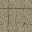
courtyard_paving
courtyard_paving · 32×32terrain-component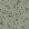
室内地板
floor · 32×32terrain-component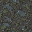
低地
low · 32×32terrain-component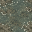
洼地
marsh · 32×32terrain-component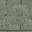
quay_top
quay_top · 32×32terrain-component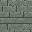
street_stone
street_stone · 32×32terrain-component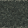
墙体 · 连续墙顶
wall · 32×32terrain-componentwall_face_e
wall_face_e · 4×48terrain-component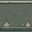
wall_face_s
wall_face_s · 32×32terrain-component组件（方向 / 门 / 尸体等） 142
杂物桶 · 背面
barrel_back · 32×32 · barrel 的背面scene-component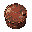
杂物桶 · 侧面
barrel_side · 32×32 · barrel 的侧面scene-component诊疗床 · 背面
bed_clinic_back · 32×32 · bed_clinic 的背面scene-component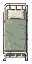
bed_clinic_large
bed_clinic_large · 32×64scene-component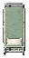
bed_clinic_large_back
bed_clinic_large_back · 32×64scene-component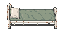
bed_clinic_large_side
bed_clinic_large_side · 64×32scene-component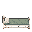
诊疗床 · 侧面
bed_clinic_side · 32×32 · bed_clinic 的侧面scene-component家用床 · 背面
bed_home_back · 32×32 · bed_home 的背面scene-component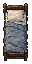
bed_home_large
bed_home_large · 32×64scene-componentbed_home_large_back
bed_home_large_back · 32×64scene-componentbed_home_large_side
bed_home_large_side · 64×32scene-component家用床 · 侧面
bed_home_side · 32×32 · bed_home 的侧面scene-component长凳 · 背面
bench_wood_back · 32×32 · bench_wood 的背面scene-component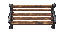
bench_wood_large
bench_wood_large · 64×32scene-componentbench_wood_large_back
bench_wood_large_back · 64×32scene-component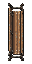
bench_wood_large_side
bench_wood_large_side · 32×64scene-component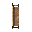
长凳 · 侧面
bench_wood_side · 32×32 · bench_wood 的侧面scene-component地面血迹
blood · 32×32scene-componentbridge_stone_rail_n
bridge_stone_rail_n · 32×32scene-component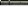
bridge_stone_rail_s
bridge_stone_rail_s · 32×32scene-componentbridge_wood_rail_n
bridge_wood_rail_n · 32×32scene-componentbridge_wood_rail_s
bridge_wood_rail_s · 32×32scene-component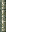
canal_bank_e
canal_bank_e · 32×32scene-componentcanal_bank_w
canal_bank_w · 32×32scene-component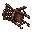
木椅 · 背面
chair_back · 32×32 · chair 的背面scene-component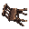
木椅 · 侧面
chair_side · 32×32 · chair 的侧面scene-component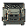
安保监控台 · 背面
console_security_back · 32×32 · console_security 的背面scene-component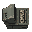
安保监控台 · 侧面
console_security_side · 32×32 · console_security 的侧面scene-componentcorpse
corpse · 32×32scene-component尸体 · 回响体（异常）
corpse_echo · 32×32scene-component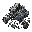
尸体 · 潮汐守卫（机械）
corpse_guard · 32×32scene-component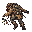
尸体 · 拾荒者（人类）
corpse_scav · 32×32scene-component银行柜台 · 背面
counter_bank_back · 32×32 · counter_bank 的背面scene-component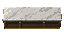
counter_bank_large
counter_bank_large · 64×32scene-componentcounter_bank_large_back
counter_bank_large_back · 64×32scene-componentcounter_bank_large_side
counter_bank_large_side · 32×64scene-component银行柜台 · 侧面
counter_bank_side · 32×32 · counter_bank 的侧面scene-component营业柜台 · 背面
counter_shop_back · 32×32 · counter_shop 的背面scene-componentcounter_shop_large
counter_shop_large · 64×32scene-componentcounter_shop_large_back
counter_shop_large_back · 64×32scene-componentcounter_shop_large_side
counter_shop_large_side · 32×64scene-component营业柜台 · 侧面
counter_shop_side · 32×32 · counter_shop 的侧面scene-component床头柜
crate_bedside · 32×32scene-component遗弃纸箱
crate_cardboard · 32×32scene-component通讯设备箱（旧稿）
crate_comms · 32×32scene-component密封公文包
crate_diplomatic · 32×32scene-component电子设备柜
crate_elec · 32×32scene-component急救器材箱
crate_emergency · 32×32scene-component抽屉 / 矮柜
crate_fast · 32×32scene-component办公文件柜
crate_filing · 32×32scene-component保险箱
crate_heavy · 32×32scene-component珠宝匣
crate_jewelry · 32×32scene-component皮质旅行包
crate_leatherbag · 32×32scene-component旅行箱
crate_luggage · 32×32scene-component医疗柜
crate_med · 32×32scene-component救援人员背心
crate_rescuevest · 32×32scene-component帆布挎包
crate_satchel · 32×32scene-component运动包
crate_schoolbag · 32×32scene-component机密封存箱
crate_sealed · 32×32scene-component员工储物盒
crate_staff · 32×32scene-component储物柜
crate_std · 32×32scene-component防水补给箱
crate_supply · 32×32scene-component工具箱
crate_tool · 32×32scene-component垃圾桶
crate_trash · 32×32scene-component废纸篓
crate_wastepaper · 32×32scene-component遗落的工作服
crate_workwear · 32×32scene-component桌子 · 背面
desk_back · 32×32 · desk 的背面scene-componentdesk_large
desk_large · 64×32scene-componentdesk_large_back
desk_large_back · 64×32scene-componentdesk_large_side
desk_large_side · 32×64scene-component桌子 · 侧面
desk_side · 32×32 · desk 的侧面scene-component橱窗展柜 · 背面
display_clock_back · 32×32 · display_clock 的背面scene-componentdisplay_clock_large
display_clock_large · 64×32scene-componentdisplay_clock_large_back
display_clock_large_back · 64×32scene-componentdisplay_clock_large_side
display_clock_large_side · 32×64scene-component橱窗展柜 · 侧面
display_clock_side · 32×32 · display_clock 的侧面scene-component门 · 正向（关闭）
door · 32×32scene-component门 · 正向（打开）
door_open · 32×32scene-component普通门 · 侧向（关闭）
door_side · 32×32scene-component普通门 · 侧向（打开）
door_side_open · 32×32scene-component撤离点
exit · 32×32scene-componentrubble_decal
rubble_decal · 32×32scene-component避难间门 · 正向（关闭）
sdoor · 32×32scene-component避难间门 · 正向（打开）
sdoor_open · 32×32scene-component避难门 · 侧向（关闭）
sdoor_side · 32×32scene-component避难门 · 侧向（打开）
sdoor_side_open · 32×32scene-component货架 · 背面
shelf_back · 32×32 · shelf 的背面scene-componentshelf_large
shelf_large · 64×32scene-componentshelf_large_back
shelf_large_back · 64×32scene-componentshelf_large_side
shelf_large_side · 32×64scene-component货架 · 侧面
shelf_side · 32×32 · shelf 的侧面scene-componentshop_window_ns
shop_window_ns · 32×32scene-component沙发 · 背面
sofa_home_back · 32×32 · sofa_home 的背面scene-componentsofa_home_large
sofa_home_large · 64×32scene-componentsofa_home_large_back
sofa_home_large_back · 64×32scene-componentsofa_home_large_side
sofa_home_large_side · 32×64scene-component沙发 · 侧面
sofa_home_side · 32×32 · sofa_home 的侧面scene-component灶台 · 背面
stove_home_back · 32×32 · stove_home 的背面scene-component灶台 · 侧面
stove_home_side · 32×32 · stove_home 的侧面scene-componenttree_courtyard
tree_courtyard · 32×32scene-componenttree_courtyard_back
tree_courtyard_back · 32×32 · tree_courtyard 的背面scene-component院落树木 · 背面
tree_courtyard_canopy_back · 96×96 · tree_courtyard_canopy 的背面scene-component院落树木 · 侧面
tree_courtyard_canopy_side · 96×96 · tree_courtyard_canopy 的侧面scene-componenttree_courtyard_side
tree_courtyard_side · 32×32 · tree_courtyard 的侧面scene-componentwall_breach_n
wall_breach_n · 32×32scene-componentwall_breach_s
wall_breach_s · 32×32scene-component大型保险箱
crate_safe_big · 32×32scene-component军用物资箱
crate_military_supply · 48×48scene-component尸体 · 据点看守（人类）
corpse_holdout · 32×32scene-component尸体 · 受雇回收员（人类）
corpse_retriever · 32×32scene-component老式餐桌 · 侧面
table_dining_side · 64×64 · table_dining 的侧面scene-component老式餐桌 · 背面
table_dining_back · 64×64 · table_dining 的背面scene-component普通木椅 · 侧面
chair_wood_side · 32×32 · chair_wood 的侧面scene-component普通木椅 · 背面
chair_wood_back · 32×32 · chair_wood 的背面scene-component旧衣柜 · 侧面
wardrobe_home_side · 32×64 · wardrobe_home 的侧面scene-component旧衣柜 · 背面
wardrobe_home_back · 64×32 · wardrobe_home 的背面scene-component厨房水槽 · 侧面
sink_kitchen_side · 32×32 · sink_kitchen 的侧面scene-component厨房水槽 · 背面
sink_kitchen_back · 32×32 · sink_kitchen 的背面scene-component老式冰箱 · 侧面
fridge_home_side · 32×32 · fridge_home 的侧面scene-component老式冰箱 · 背面
fridge_home_back · 32×32 · fridge_home 的背面scene-component医疗器械推车 · 侧面
cart_medical_side · 32×32 · cart_medical 的侧面scene-component医疗器械推车 · 背面
cart_medical_back · 32×32 · cart_medical 的背面scene-component医用屏风 · 侧面
screen_clinic_side · 32×64 · screen_clinic 的侧面scene-component医用屏风 · 背面
screen_clinic_back · 64×32 · screen_clinic 的背面scene-component钟表维修台 · 侧面
workbench_clock_side · 32×64 · workbench_clock 的侧面scene-component钟表维修台 · 背面
workbench_clock_back · 64×32 · workbench_clock 的背面scene-component落地钟 · 侧面
clock_grandfather_side · 32×32 · clock_grandfather 的侧面scene-component落地钟 · 背面
clock_grandfather_back · 32×32 · clock_grandfather 的背面scene-component银行排队围栏 · 侧面
barrier_queue_side · 32×32 · barrier_queue 的侧面scene-component银行排队围栏 · 背面
barrier_queue_back · 32×32 · barrier_queue 的背面scene-component重型工作台 · 侧面
workbench_industrial_side · 32×64 · workbench_industrial 的侧面scene-component重型工作台 · 背面
workbench_industrial_back · 64×32 · workbench_industrial 的背面scene-component木质托盘堆 · 侧面
pallet_stack_side · 32×64 · pallet_stack 的侧面scene-component木质托盘堆 · 背面
pallet_stack_back · 64×32 · pallet_stack 的背面scene-component散落物品堆
loot_pile · 32×32scene-component单向受阻木门
door_barricade · 32×32scene-component单向受阻木门·侧面
door_barricade_side · 32×32 · door_barricade 的侧面scene-component上锁铁门
door_locked · 32×32scene-component上锁铁门·侧面
door_locked_side · 32×32 · door_locked 的侧面scene-component南北向门结构试验
door_side_study · 32×48scene-component武器箱
crate_weapons · 32×32scene-component装备箱
crate_equipment · 32×32scene-component